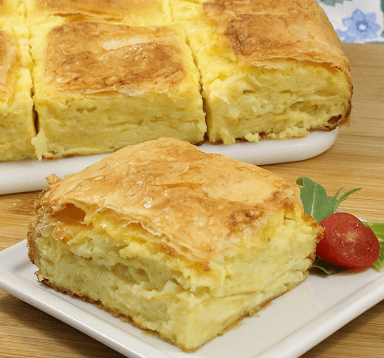

1. Combine eggs, oil, salt, sparkling water and sourcream and set aside.
2. Preheat the oven on 375F. Set up your fillo dough, pan, bowl of filling, and oil.
3. After defrosting the fillo layers according to the directions on the box, lay them next to a 9 x 11" oven-safe pan.
LIghtly brush or spray the pan with butter/oil. Put down the first sheet of fillo dough, brush it lightly with butter,
oil and continue to do that until you have used about 1/3 of the fillo sheets.4. Spread half of the filling smoothly over the top sheet of fillo dough and continue adding fillo dough sheets,
one at a time, brushing with butter/oil after each one, until you have used another 1/3 of the fillo dough sheets.
Spread the remaining half of the filling on top of the last sheet of dough and use up the remaining sheets of fillo dough.
Brush the top sheet of fillo dough.
5. Bake for 35-45 minutes until the top is golden brown, especially around the edges.
6. Let the Gibanica sit for about 5-10 minutes before you cut it. Serve with greek yoghurt. Prijatno!

Click here to go back to About me section.
Click here to go back to Homepage